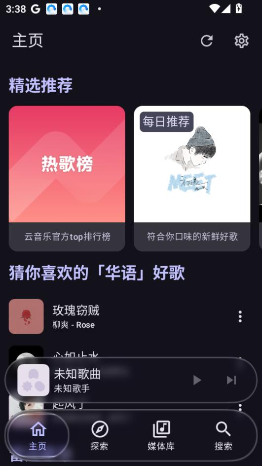

kanade 停在 v1.3 了，但这可能是它最好的结局
一个把网易云官方 App 砍到只剩 3.79MB 的播放器，归档一年后再看它的迭代节奏——从"砍掉什么才留得下什么"到它为什么注定不会有 v2.0。
现状：v1.3，一款 3.79MB 的音乐播放器
我现在手机里装着的 kanade，它的官网维护着最新版本信息，包名 com.rcmiku.kanade，版本号 1.3，下载下来安装包只有 3.79MB。冷启动一秒内，后台常驻三四十兆内存，滑动列表时没有一丝多余的渲染层。这个体积什么概念——同品类主流音乐播放器动辄七八十兆起步，kanade 连它们的零头都不到。
但体积只是最直观的数字。真正让人记住它的，是打开之后那种"安静"：首页没有会员 banner 追着你跑，没有直播入口占着顶栏黄金位置，没有评论区的弹幕和话题讨论，也没有时不时弹出来的运营活动卡片。它只做一件事——让你找歌、放歌、收藏歌。

来路：从网易云壳到纯听歌，砍掉什么才留得下什么
样本文档里没有列 v1.0 到 v1.2 的 changelog，甚至连第一个版本什么时候发布的都没提。这个沉默本身就是一种线索——它暗示 kanade 的早期迭代不是一次一个大版本号的节奏，而是快速试错、快速裁剪的过程。我们能从 v1.3 的"剩下来的东西"反推它砍掉了什么。
直播、商城与会员促销、评论区社交、信息流推送、播客与有声书、会员专属音效和主题——这六大模块是网易云官方 App 在过去三年里重点投入的方向，每一块都带着独立的资源包和业务逻辑代码。kanade 把它们全部剥离了。没有"我们先做个最小可用版再慢慢加"的思路，从一开始就是反过来的：先把网易云整个 App 放进来，再一刀一刀往下砍，砍到剩下的东西刚好覆盖听歌流程的六个核心环节——找歌、播放、看歌词、收藏管理、账号同步、个人中心。
这个取舍在当时（2025 年 9 月 v1.3 发布的时候）看起来有点反潮流。那年月音乐 App 都在往"超级 App"方向走——官方网易云自己在做播客、做有声书、做直播带货，QQ 音乐在做社区和演出票务，甚至虾米都想过做电商。kanade 却选择了一条完全相反的路：你往里加，我往外砍。
规律：从迭代节奏看，它一直在死磕"体积"和"纯净"
虽然看不到完整版本史，但 v1.3 这个终版能告诉我们 kanade 的开发者在哪些地方花了最多力气：
第一优先级是体积。 3.79MB 不是靠极限压缩 APK 做出来的——压缩能省个几百兆顶死，但 kanade 砍的是整个业务模块。每砍掉一个功能组就能省掉几 MB 到十几 MB 的独立资源包，这种取舍需要对"什么是听歌真正需要的"有非常坚定的判断。
第二优先级是不打扰。 没有会员广告、没有推送、没有强制引导登录（虽然真正的个性化推荐需要账号，但没登录也不会弹框骚扰）、没有音效调节界面——能不出现的东西就不让它出现。这个优先级在今天的移动端产品里几乎是个异类，绝大多数 App 的默认策略是"能推就推、能弹就弹"。
第三优先级是兼容性。 系统要求 Android 5.0（API 21）及以上——这个门槛放得非常低，意味着安卓 7 年前的老机型也能跑。样本文档特别提到 4GB 内存以下、Android 8.0 以前的老机型在 kanade 上的体验差异，说明兼容性不是事后补的，而是贯穿在整个产品设计里的。
反过来，有一件事它从来没做过：扩展功能边界。播客不碰、有声书不碰、社交不碰、音效调节不碰——哪怕这些功能在官方 App 上已经成熟到可以随便抄，它也不跟进。
预判：它为什么注定不会有 v2.0
它的文档里有一行话我读了好几遍："版本号标注为 v2.3、v3.0 之类的——kanade 已归档，官方永远停在 v1.3。"
这个"永远停在"不是那种"我们暂时停更、以后可能重启"的软归档，而是明确说"永远"。背后的逻辑其实很清晰：kanade 的产品定位本身就是一个"切片"——它切的是网易云音乐里"纯听歌"这一个维度，一旦这个切片被打磨到位，就没有继续迭代的空间了。
它不会加播客，因为加了就打破了"纯听歌"的定位；它不会加音效调节，因为加了就需要引入额外的音频处理库、增大体积；它不会做社交，因为社交需要用户体系、需要服务器资源、需要运营，这些都是和"3.79MB、无广告、不打扰"这个核心定位直接冲突的。
换个角度说，kanade 的终局就是它最开始的起点：一个足够小、足够安静、足够够用的音乐播放器。它不需要成为超级 App，不需要日活千万，不需要融资——它只需要在那些厌烦了官方 App 臃肿、只想安安静静听歌的用户手机里占一个 3.79MB 的位置。
从这个意义上讲，停在 v1.3 不是失败，而是一个产品最体面的结局——它做了它想做的事，做到了，然后优雅退场。
写在最后
我有时候会想，2025 年那个决定归档的开发者，是在什么样的心态下写的那行"官方永远停在 v1.3"。可能是看着代码库觉得"再改就是画蛇添足了"，也可能是收到了太多用户反馈说"别再加功能了，现在这样就好"。
不管哪种，结果是好的。在今天这个每个 App 都在拼命往自己身上叠功能、叠广告、叠社交的时代，能有一个产品说"我就做这么一件事，做到位了就停"——这本身就是一种稀缺性。
如果你现在还没用过它，可以去拿一个试试。它不会改变你听歌的方式，但可能会改变你对"一个 App 到底需要多大"的预期。
这个项目的完整资料在三个仓库都能找到——GitHub、Gitee 和 GitCode 上都同步了 kanade 的文档整理和安装包归档，方便不同网络环境的用户按需获取。